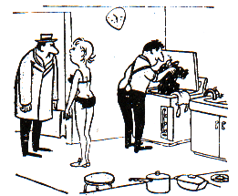

ŠALE
Družina pri zajtrku.
»Žena, to jajce mi ni všeč.«
»Tiho bodi in jej; pri jedi se ne sitnari!«
Čez nekaj minut.
»Žena, ali moram kljun tudi pojesti?«
»Sram te bodi zardi cveka v zgodovini, saj se je šele dobro začela!«
»In ne reci ›Da Francka‹ vsakič, ko pes zalaja!«
»Nikar se ne razburjaj: gospod mi samo pojasnjuje delovanje pralnega stroja!«
